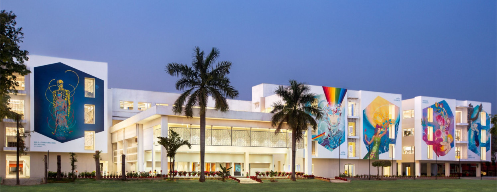
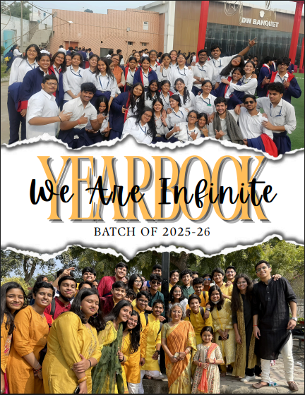

Every shared laugh, every silent victory, and every frame of our story is captured here. Step into our digital gallery to experience the high-definition 3D yearbook.
Open Flipbook
— Batch of 2027
"Vande Matram As you leave behind this chapter and step into a world of new possibilities, remember the values and lessons your school has instilled in you. Success is not only measured by achievements, but by the character you uphold and the impact you create. Stay determined, stay humble and never stop learning. The world is wide open, waiting for you. Go forward with confidence, with grace, and with a heart that never forgets its roots. God Bless you"
— Mrs. Promini Chopra \n Principal
"To the outgoing batch of Grade XII, My aspiration for you is that you continue to grow, contribute to the greater good, stay guided by your inner compass and embrace life to its fullest. May you carry forward the values and lessons that you have gained, approach each new challenge with courage and resilience and remain open to learning and evolving at every step. I hope you find purpose in your pursuits and make a meaningful difference wherever you go. Wishing you all the very best in your future endeavours."
— Mr. Anupam Vidyarthi
LEGACY
"The corridors might be quiet, but the echo of your spirit remains. We promise to protect the legacy you've left behind."